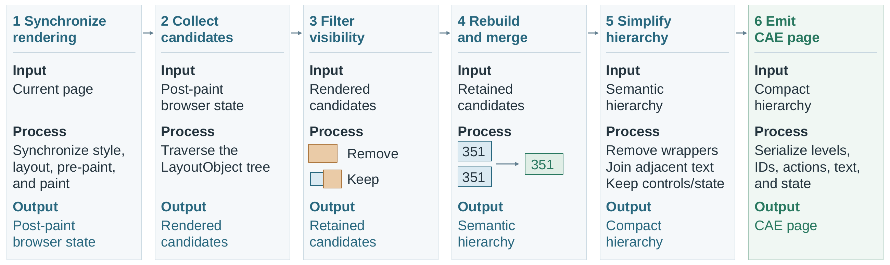
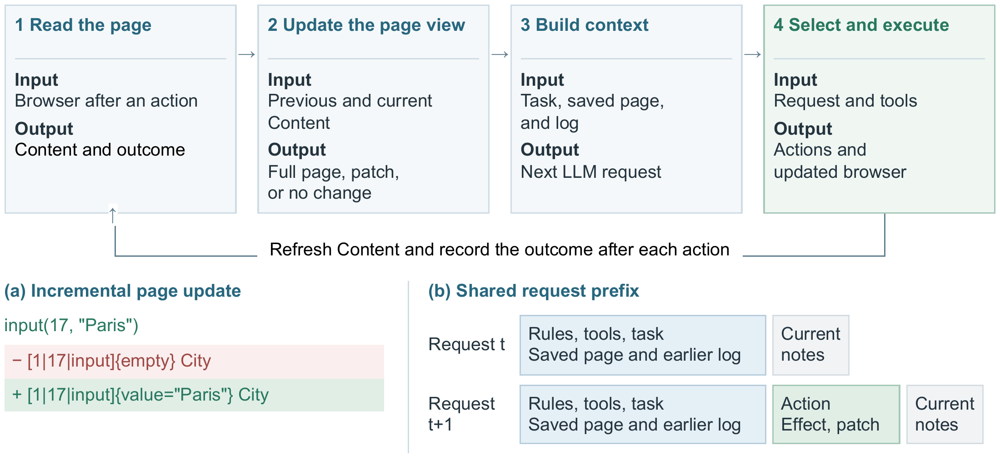

Content
Rendered text and controls, organized by target identity, hierarchy, and visible state.
A browser interface that connects Content, available Actions, and observed Effects. Built for agents that read, act, and update their view of the web.
input(41, "Paris")"" → "Paris"Web agents repeatedly read page state, choose operations, and interpret outcomes. CAE brings these steps into one browser-native representation, grounded in rendering and execution events. CAE Agent uses this interface to maintain a versioned page view and build its next decision context.
Rendered text and controls, organized by target identity, hierarchy, and visible state.
Supported operations listed with their targets, so the model can select an available action.
Observed action outcomes and page changes, carried into the next decision context.
Five agent systems, four LLM backbones, and the same 197 real-website tasks per configuration. Explore the paper's success and cost heatmaps below.
197 selected task executions per cell
Success rate (%) · higher is better
| Agent system | GLM-5.3 | DeepSeek v4.1-flash | Kimi-k3 | GPT-6.1 sol |
|---|---|---|---|---|
| Jev Ultrafast | 17.8% | 17.8% | 18.3% | 20.3% |
| AgentOccam | 20.8% | 20.8% | 27.9% | 26.4% |
| Browser Use | 25.4% | 69.5% | 72.6% | 79.7% |
| AgentBrowser | 81.2% | 84.8% | 86.3% | 84.3% |
| CAE Agent | 83.8% | 85.3% | 87.3% | 86.8% |
CAE Agent completes 85.79% of the 788 selected executions, compared with 84.14% for AgentBrowser. CAE exceeds 83% on every backbone, with a 3.55-point range.
CAE's aggregate API cost is 46.18% lower than AgentBrowser's. Cost per successful task, including failed-task spending, is $0.166 versus $0.315.
Success uses all 197 tasks per configuration; evidence-unresolved executions count as failures under the paper's reporting policy. API costs combine recorded fees and frozen-tariff estimates; failed tasks are included. Systems retain their native action spaces and step definitions. These are complete-system comparisons.
Existing agents can use CAE pages without adopting the complete CAE Agent design. We retain the Browser Use and AgentBrowser controllers and replace their browser-facing observation and action interfaces with CAE.
197 selected task executions per cell
Success rate (%) · higher is better
| Agent system | GLM-5.3 | DeepSeek v4.1-flash | Kimi-k3 | GPT-6.1 sol |
|---|---|---|---|---|
| Browser Use | 25.4% | 69.5% | 72.6% | 79.7% |
| Browser Use + CAE | 76.6% | 72.1% | 79.2% | 84.3% |
| AgentBrowser | 81.2% | 84.8% | 87.8% | 84.3% |
| AgentBrowser + CAE | 88.3% | 84.3% | 88.3% | 89.3% |
Success improves by 2.54–51.27 percentage points. GLM-5.3 rises from 25.38% to 76.65%, retaining native planning, history, action queues and stopping with corresponding browser-tool prompt adaptations.
API cost falls by 11.0–51.9% across all four backbones. Task success improves on three of four backbones, using the same system prompt, full history and single-tool decision loop.
The gains depend on the configuration: AgentBrowser with DeepSeek completes one fewer task with 30.0% lower API cost; Browser Use with GPT completes nine more tasks with 16.8% higher API cost. CAE can improve completion or efficiency, without a uniform improvement in both.
Document structure alone does not tell an agent which controls are covered or which rendered fragments belong together. CAE starts from the browser's post-paint state, then emits a hierarchy with target identifiers, available operations, and control state.

Visibility filtering removes fully covered candidates conservatively. Fragments that belong to one control share an identity, while meaningful structure and form state remain.
Controls use [LEVEL|ID|ACTIONS]TEXT. The agent reads the target and its supported operations together, then observes the resulting changes after execution.
Explore how real webpages become structured, actionable CAE outlines. Browse six saved examples alongside their screenshots and DOM representations.
[194]<a />
[7]<img alt=tct-logo />
[202]<div />
[204]<div />
English
[61]<div />
|SHADOW(open)|[60]<input type=text name=q id=autocomplete placeholder=Site Search />
[223]<button aria-label=search type=submit />
[226]<a />
Reviews
[229]<a />
About us
[232]<a />
Contact us
[259]<a />
Home
[262]<a />
China Tours
[265]<a />
Classic China Tours
[267]<a />
Scenic China Tours
[269]<a />
China Cultural Tours
[271]<a />
Yangtze River Cruises
[273]<a />
Silk Road Adventure
[275]<a />
Tibet Tours
[277]<a />
Yunnan Tours
[279]<a />
Beijing Tours
[281]<a />
Shanghai Tours
[283]<a />
Guilin Tours
[285]<a />
Chengdu Tours
[287]<a />
Zhangjiajie Tours
[288]<span />
[290]<a />
Top 10 Tours
[292]<a />
Group Tours
[294]<a />
Tailor-made
[296]<a />
Asia Tours
[299]<a />
Multi-country Asia Tours
[301]<a />
Thailand Tours
[303]<a />
Vietnam Tours
[305]<a />
Cambodia Tours
[307]<a />
Myanmar Tours
[309]<a />
Indonesia Tours
[311]<a />
Singapore Tours
[313]<a />
Nepal Tours
[315]<a />
India Tours
[317]<a />
Japan Tours
[319]<a />
South Korea Tours
[320]<span />
[321]<span />
[323]<a />
Destinations
[326]<a />
Beijing
[328]<a />
Shanghai
[330]<a />
Xi'an
[332]<a />
Guilin
[334]<a />
Zhangjiajie
[336]<a />
Chengdu
[338]<a />
Chongqing
[340]<a />
Hangzhou
[342]<a />
Huangshan
[344]<a />
Tibet
[346]<a />
Yunnan
[348]<a />
Yangtze River
[349]<span />
[350]<span />
[352]<a />
China Guide
[355]<a />
China Travel Tips
[357]<a />
Best Places in China
[359]<a />
Chinese Culture
[361]<a />
China Attractions
[363]<a />
The Great Wall
[365]<a />
China Panda
[367]<a />
High-speed Train
[369]<a />
The Silk Road
[371]<a />
China Maps
[372]<span />
[373]<span />
[387]<div />
Time to explore real China!
We can customize your dream China trip by your interests & requests!
[31]<div />
[396]<div id=search-b />
|SHADOW(open)|[32]<input name=city id=city placeholder=Where to go? title=please select the above destinations that you want to go />
[47]<input type=checkbox value=Beijing name=sc[] id=bj checked=false />
Beijing
[48]<input type=checkbox name=sc[] value=Shanghai id=sh checked=false />
Shanghai
[49]<input type=checkbox name=sc[] value=Xian id=xa checked=false />
Xi'an
[50]<input type=checkbox name=sc[] value=Guilin id=gl checked=false />
Guilin
[51]<input type=checkbox name=sc[] value=Chengdu id=cd checked=false />
Chengdu
[52]<input type=checkbox name=sc[] value=Yangtze id=yr checked=false />
Yangtze River
[53]<input type=checkbox name=sc[] value=Hong-Kong id=hk checked=false />
Hong Kong
[54]<input type=checkbox name=sc[] value=Lhasa id=ls checked=false />
Tibet
[55]<input type=checkbox name=sc[] value=Kunming id=km checked=false />
Yunnan
[56]<input type=checkbox name=sc[] value=Hangzhou id=hz checked=false />
Hangzhou
[57]<input type=checkbox name=sc[] value=Huangshan id=hs checked=false />
Huangshan
[58]<input type=checkbox name=sc[] value=Zhangjiajie id=zjj checked=false />
Zhangjiajie
|SHADOW(open)|*[33]<select name=Tour_Length expanded=false compound_components=(name=Dropdown Toggle,role=button),(name=Options,role=listbox,count=8,options=Duration|All|1 day|2-5 days) />
|SHADOW(open)|[459]<input type=submit value=Search />
Top China Travel, Top Travel Agency in China!
The choice is easy. Top China Travel is the foremost online China tour operator, offering high-quality
China in-bound tour services to the tourists worldwide. We offer an extensive range of services
including organized and independent tours of China, special interest and incentive trips, as well as
booking services for accommodation and transportation...to help you with an enjoyable China holiday.
[467]<a />
Top China Tours
[471]<a />
11 Days China Wonders Experience Tour
Beijing, Xi'an, Guilin, Shanghai
[475]<a />
View Details
[478]<a />
8 Days Classic China Tour
Beijing, Xi'an, Shanghai
[482]<a />
View Details
[485]<a />
12 Days China Panda Tour
Beijing, Xi'an, Chengdu, Guilin, Shanghai
[489]<a />
View Details
[8]<a />
14 Days Enjoy Natural Wonders of Zhangjiajie & Guilin
Beijing, Xi'an, Guilin, Zhangjiajie, Shanghai
[497]<a />
View Details
[500]<a />
14 Days China's Platinum Triangle: Imperial Capitals & Avatar Peaks Adventure
Beijing, Xi'an, Chengdu, Chongqing, Zhangjiajie, Shanghai
[506]<a />
View Details
[509]<a />
16 Days China Highlight Tour
Beijing, Xi'an, Chengdu, Guilin, Hangzhou, Suzhou, Shanghai
[515]<a />
View Details
[517]<a />
[518]<span />
More Tours
[522]<a />
Top Asia Tours including China
[526]<a />
14 Days Highlights of Japan, South Korea and China Group Tour
Tokyo, Mt. Fuji, Seoul, Beijing, Xi'an, Shanghai
[532]<a />
View Details
[535]<a />
17 Days Japan & China Group Tour
Tokyo, Hakone, Kyoto, Nara, Osaka, Beijing, Xi'an, Guilin, Shanghai
[541]<a />
View Details
[544]<a />
15 Days Best of China and Vietnam Group Tour
Beijing, Xi'an, Shanghai, Hanoi, Halong Bay, Ho Chi Minh
[550]<a />
View Details
[553]<a />
16 Days Best of China and Thailand Group Tour
Beijing, Xi'an, Shanghai, Bangkok, Chiang Mai, Chiang Rai, Phuket
[559]<a />
View Details
[562]<a />
15 Days China, Cambodia & Thailand
Beijing, Xi'an, Shanghai,Phnom Penh, Siem Reap, Bangkok
[568]<a />
View Details
[571]<a />
19 Days China, Nepal & India Explorer
Beijing, Xi'an, Lhasa, Chengdu, Kathmandu, Nagarkot, Delhi, Jaipur, Agra, Delhi
[577]<a />
View Details
[579]<a />
[580]<span />
More Tours
Tailor-made Your Trip
Free Design Itinerary and Quote for You !
[589]<a />
Create My Trip
[593]<a />
Top China Destinations
[596]<a />
Beijing
[601]<a />
Xi'an
[606]<a />
Shanghai
[611]<a />
Guilin
[616]<a />
Chengdu
[621]<a />
Zhangjiajie
[626]<a />
Tibet
[631]<a />
Yangtze River
[636]<a />
[637]<span />
More Destinations
[641]<a />
Useful Travel Articles
[645]<a />
2026 China Travel Restrictions & Policy ( Latest updates )
[650]<a />
Most Beautiful Places in China
[655]<a />
Best Time to Visit China
[660]<a />
Top 10 Attractions in China
[665]<a />
How to plan a trip to Tibet?
[670]<a />
How to Plan a Silk Road Tour?
[674]<a />
[675]<span />
Get More Travel Guide & Tips
Why Choose Top China Travel
[685]<a />
Well-known Tour Brand
CITS 60-year history
[692]<a />
Commended by TripAdvisor
Excellence award winner
[699]<a />
10000+ Client's Feedback
Our real happiness
[706]<a />
Assist government reception
World celebrities with us
[713]<a />
Professional Sales Team
All tour experts
[720]<a />
Our Memberships
In major travel associations
Congratulations!
We are recommended by Tripadvisor seven years in a row
[730]<a />
[735]<a />
[736]<img alt=TripAdvisor />
[740]<a />
Top China Travel
Recent Traveler Reviews
“Hassle free experience. We recommend it.”
“An unforgettable 17-day China trip with TCT!”
“Luke and TCT -a five star experience”
“Enjoyable trip to Chongqing with family with...”
[758]<a id=allreviews />
Read reviews
[761]<a id=writereview />
Write a review
Lea S
Vancouver Island, Canada
“16 days in China and Cambodia”
Just got back from an amazing 16 days in China and Cambodia. Rebecca set up the perfect
itinerary for me and my daughters. The guides were all amazing - especially Joanne in Guilin and
Chet in Seim Reap. All of the hotels were great and very well situated.
I would recommend TCT to everyone who is planning a trip to China ( and they shuld NOT miss
Guilin)
[782]<a />
TCT Client's Feedbacks
[786]<a />
16 Days Beijing-Xi'an-Guilin-Zhangjiajie-Shanghai Trip with Family
Client:
DIMATTEO ROCCO
Nationality:
ITALY
Pax:
Itinerary:
[798]<a />
Beijing-Xi'an-Guilin-Zhangjiajie-Shanghai
[801]<a />
8 Days Beijing-Xi'an-Shanghai Small Group Tour
Client:
FROILAN CLACER
Nationality:
CANADA
Pax:
Itinerary:
[813]<a />
Beijing-Xi'an-Shanghai
[816]<a />
14 Days Explore Liziba & Giant Pandas Adventure
Client:
SURENDRA
Nationality:
INDIA
Pax:
Itinerary:
[828]<a />
Beijing-Xi'an-Chengdu-Chongqing-Zhangjiajie-Shanghai
[830]<a />
[831]<span />
More Feedbacks
We are member of
[840]<a />
[841]<img />
Follow us on
[846]<a />
[847]<img />
[848]<a />
[849]<img />
[850]<a />
[851]<img />
[852]<a />
[853]<img />
Pay By
[858]<a />
[859]<img />
[860]<a />
[861]<img />
[862]<a />
[863]<img />
[864]<a />
[865]<img />
[866]<a />
[867]<img />
[872]<a />
About us
[874]<a />
Contact us
[876]<a />
How to Book
[878]<a />
How to Pay
[880]<a />
Terms & Conditions
[882]<a />
Cancellation and Refund
[884]<a />
Privacy Statement
Our license Number: L-GX-CJ00001
Copyright 2004 All Rights Reserved
Top China Travel[0|194|click]{url="/"}
[1|7|]tct-logo
[0|11|]china travel
[0|204|click]English
[0|60|click,input,input_submit]Site Search
[0|223|click]search
[0|226|click]Reviews
[0|228|]|
[0|229|click]About us
[0|231|]|
[0|232|click]Contact us
[0|259|click]Home
[0|262|click,hover]China Tours
[0|290|click]Top 10 Tours
[0|292|click]Group Tours
[0|294|click]Tailor-made
[0|296|click,hover]Asia Tours
[0|323|click,hover]Destinations
[0|352|click,hover]China Guide
[0|6|]Top China Travel Agency, Top China Tours
[0|390|]Time to explore real China!\nWe can customize your dream China trip by your interests & requests!
[1|32|click]Where to go? | please select the above destinations that you want to go
[1|47|]{unchecked value="Beijing"}Beijing
[1|48|]{unchecked value="Shanghai"}Shanghai
[1|49|]{unchecked value="Xian"}Xi'an
[1|50|]{unchecked value="Guilin"}Guilin
[1|51|]{unchecked value="Chengdu"}Chengdu
[1|52|]{unchecked value="Yangtze"}Yangtze River
[1|53|]{unchecked value="Hong-Kong"}Hong Kong
[1|54|]{unchecked value="Lhasa"}Tibet
[1|55|]{unchecked value="Kunming"}Yunnan
[1|56|]{unchecked value="Hangzhou"}Hangzhou
[1|57|]{unchecked value="Huangshan"}Huangshan
[1|58|]{unchecked value="Zhangjiajie"}Zhangjiajie
[1|33|click,select]{value="0"}Duration
[1|459|click]Search
[0|463|]Top China Travel, Top Travel Agency in China!
[0|464|]The choice is easy. Top China Travel is the foremost online China tour operator, offering high-quality\n China in-bound tour services to the tourists worldwide. We offer an extensive range of services\n including organized and independent tours of China, special interest and incentive trips, as well as\n booking services for accommodation and transportation...to help you with an enjoyable China holiday.
[0|467|click]Top China Tours
[0|470|hover]
[1|471|click]{url="/china-tours/11-days-experience-china-to…"}
[2|12|]11 Days China Wonders Experience Tour
[2|9|]11 Days China Wonders Experience Tour
[2|34|]Beijing, Xi'an, Guilin, Shanghai
[3|475|click]View Details
[0|477|hover]
[1|478|click]{url="/china-tours/8-days-beijing-xian-shangha…"}
[2|19|]8 Days Classic China Tour
[2|15|]8 Days Classic China Tour
[2|35|]Beijing, Xi'an, Shanghai
[3|482|click]View Details
[0|484|hover]
[1|485|click]{url="/china-tours/12-days-inland-china-tour/"}
[2|20|]12 Days China Panda Tour
[2|17|]12 Days China Panda Tour
[2|36|]Beijing, Xi'an, Chengdu, Guilin, Shanghai
[3|489|click]View Details
[0|491|hover]
[1|8|click]{url="/china-tours/china-package-to-zhangjiaji…"}
[2|21|]14 Days Enjoy Natural Wonders of Zhangjiajie & Guilin
[2|493|]14 Days Enjoy Natural Wonders of Zhangjiajie & Guilin
[2|37|]Beijing, Xi'an, Guilin, Zhangjiajie, Shanghai
[3|497|click]View Details
[0|499|hover]
[1|500|click]{url="/china-tours/china-platinum-triangel-tou…"}
[2|22|]14 Days China's Platinum Triangle: Imperial Capitals & Avatar Peaks Adventure
[2|502|]14 Days China's Platinum Triangle: Imperial Capitals & Avatar Peaks Adventure
[2|38|]Beijing, Xi'an, Chengdu, Chongqing, Zhangjiajie, Shanghai
[3|506|click]View Details
[0|508|hover]
[1|509|click]{url="/china-tours/beijing-xian-guilin-hangzho…"}
[2|23|]16 Days China Highlight Tour
[2|511|]16 Days China Highlight Tour
[2|39|]Beijing, Xi'an, Chengdu, Guilin, Hangzhou, Suzhou, Shanghai
[3|515|click]View Details
[0|517|click]{url="/china-tours/top-10-china-tours/"}
[1|518|click]More Tours
[0|522|click]Top Asia Tours including China
[0|525|hover]
[1|526|click]{url="/asia-tours/highlights-of-japan-south-ko…"}
[2|24|]14 Days Highlights of Japan, South Korea and China Group Tour
[2|528|]14 Days Highlights of Japan, South Korea and China Group Tour
[2|40|]Tokyo, Mt. Fuji, Seoul, Beijing, Xi'an, Shanghai
[3|532|click]View Details
[0|534|hover]
[1|535|click]{url="/asia-tours/classic-japan-china-tour/"}
[2|25|]17 Days Japan & China Group Tour
[2|537|]17 Days Japan & China Group Tour
[2|41|]Tokyo, Hakone, Kyoto, Nara, Osaka, Beijing, Xi'an, Guilin, Shanghai
[3|541|click]View Details
[0|543|hover]
[1|544|click]{url="/asia-tours/china-vietnam-group-tour/"}
[2|26|]15 Days Best of China and Vietnam Group Tour
[2|546|]15 Days Best of China and Vietnam Group Tour
[2|42|]Beijing, Xi'an, Shanghai, Hanoi, Halong Bay, Ho Chi Minh
[3|550|click]View Details
[0|552|hover]
[1|553|click]{url="/asia-tours/china-thailand-group-tour/"}
[2|27|]16 Days Best of China and Thailand Group Tour
[2|555|]16 Days Best of China and Thailand Group Tour
[2|43|]Beijing, Xi'an, Shanghai, Bangkok, Chiang Mai, Chiang Rai, Phuket
[3|559|click]View Details
[0|561|hover]
[1|562|click]{url="/asia-tours/china-cambodia-thailand-high…"}
[2|28|]15 Days China, Cambodia & Thailand
[2|564|]15 Days China, Cambodia & Thailand
[2|44|]Beijing, Xi'an, Shanghai,Phnom Penh, Siem Reap, Bangkok
[3|568|click]View Details
[0|570|hover]
[1|571|click]{url="/asia-tours/china-nepal-and-india-explor…"}
[2|29|]19 Days China, Nepal & India Explorer
[2|573|]19 Days China, Nepal & India Explorer
[2|45|]Beijing, Xi'an, Lhasa, Chengdu, Kathmandu, Nagarkot, Delhi, Jaipur, Agra, Delhi
[3|577|click]View Details
[0|579|click]{url="/asia-tours/"}
[1|580|click]More Tours
[0|30|]Tailor-made Your Trip
[0|586|]Tailor-made Your Trip
[0|587|]Free Design Itinerary and Quote for You !
[1|589|click]Create My Trip
[0|593|click]Top China Destinations
[0|596|click]{url="/beijing/"}
[1|597|hover]
[2|64|]Beijing
[2|598|]Beijing
[0|601|click]{url="/xian/"}
[1|602|hover]
[2|65|]Xian
[2|603|]Xi'an
[0|606|click]{url="/shanghai/"}
[1|607|hover]
[2|66|]Shanghai
[2|608|]Shanghai
[0|611|click]{url="/guilin/"}
[1|612|hover]
[2|67|]Guilin
[2|613|]Guilin
[0|616|click]{url="/chengdu/"}
[1|617|hover]
[2|68|]Chengdu
[2|618|]Chengdu
[0|621|click]{url="/zhangjiajie/"}
[1|622|hover]
[2|69|]Zhangjiajie
[2|623|]Zhangjiajie
[0|626|click]{url="/tibet-travel/"}
[1|627|hover]
[2|70|]Tibet Travel
[2|628|]Tibet
[0|631|click]{url="/yangtze-cruise/"}
[1|632|hover]
[2|71|]Yangtze River
[2|633|]Yangtze River
[0|636|click]{url="/destinations/"}
[1|637|click]More Destinations
[0|641|click]Useful Travel Articles
[0|645|click,hover]{url="/china-tours-for-expats/can-i-travel-to-…"}
[1|72|]2023 China Travel Restrictions & Policy ( updated Feb 6, 2023)
[1|647|]2026 China Travel Restrictions & Policy ( Latest updates )
[0|650|click,hover]{url="/china-guide/most-beautiful-places-in-ch…"}
[1|73|]Most Beautiful Places in China
[1|652|]Most Beautiful Places in China
[0|655|click,hover]{url="/customer-center/best-time-to-visit-chin…"}
[1|74|]Best Time to Visit China
[1|657|]Best Time to Visit China
[0|660|click,hover]{url="/china-guide/china-top-10-attractions.ht…"}
[1|75|]Top 10 Attractions in China
[1|662|]Top 10 Attractions in China
[0|665|click,hover]{url="/customer-center/how-to-plan-a-tibet-tri…"}
[1|76|]How to plan a trip to Tibet?
[1|667|]How to plan a trip to Tibet?
[0|670|click,hover]{url="/silk-road/how-to-plan-a-silk-road-tour.…"}
[1|77|]How to Plan a Silk Road Tour?
[1|672|]How to Plan a Silk Road Tour?
[0|674|click]{url="/china-guide/"}
[1|675|click]Get More Travel Guide & Tips
[0|678|]Why Choose Top China Travel
[1|78|]Well-known Tour Brand
[1|685|click]Well-known Tour Brand
[1|686|]CITS 60-year history
[1|79|]Commended by TripAdvisor
[1|692|click]Commended by TripAdvisor
[1|693|]Excellence award winner
[1|80|]10000+ Client's Feedback
[1|699|click]10000+ Client's Feedback
[1|700|]Our real happiness
[1|81|]Assist government reception
[1|706|click]Assist government reception
[1|707|]World celebrities with us
[1|82|]Professional Sales Team
[1|713|click]Professional Sales Team
[1|714|]All tour experts
[1|83|]Our Membership
[1|720|click]Our Memberships
[1|721|]In major travel associations
[0|723|]Congratulations!
[0|724|]We are recommended by Tripadvisor seven years in a row
[1|730|click]{url="www.tripadvisor.com/Attraction_Review-g2…"}
[2|735|click]{url="www.tripadvisor.com/"}
[3|736|]TripAdvisor
[2|740|click]{url="www.tripadvisor.com/Attraction_Review-g2…"}
[3|741|]Top China Travel
[2|744|]Recent Traveler Reviews
[3|747|]“Hassle free experience. We recommend it.”
[3|749|]“An unforgettable 17-day China trip with TCT!”
[3|751|]“Luke and TCT -a five star experience”
[3|753|]“Enjoyable trip to Chongqing with family with...”
[2|758|click]Read reviews
[2|761|click]Write a review
[1|768|]Lea S
[1|769|]Vancouver Island, Canada
[1|773|]“16 days in China and Cambodia”
[1|774|]Just got back from an amazing 16 days in China and Cambodia. Rebecca set up the perfect\n itinerary for me and my daughters. The guides were all amazing - especially Joanne in Guilin and\n Chet in Seim Reap. All of the hotels were great and very well situated.\nI would recommend TCT to everyone who is planning a trip to China ( and they shuld NOT miss\n Guilin)
[0|782|click]TCT Client's Feedbacks
[0|785|hover]
[1|786|click]{url="/community/testimonial/16-days-beijing-x…"}
[2|788|]16 Days Beijing-Xi'an-Guilin-Zhangjiajie-Shanghai Trip with Family
[2|789|]16 Days Beijing-Xi'an-Guilin-Zhangjiajie-Shanghai Trip with Family
[1|790|]Client:DIMATTEO ROCCO
[1|792|]Nationality:ITALY
[1|794|]Pax:4
[2|797|]Itinerary:
[2|798|click]Beijing-Xi'an-Guilin-Zhangjiajie-Shanghai
[0|800|hover]
[1|801|click]{url="/community/testimonial/8-days-beijing-xi…"}
[2|803|]8 Days Beijing-Xi'an-Shanghai Small Group Tour
[2|804|]8 Days Beijing-Xi'an-Shanghai Small Group Tour
[1|805|]Client:FROILAN CLACER
[1|807|]Nationality:CANADA
[1|809|]Pax:2
[2|812|]Itinerary:
[2|813|click]Beijing-Xi'an-Shanghai
[0|815|hover]
[1|816|click]{url="/community/testimonial/14-days-explore-c…"}
[2|818|]14 Days Explore Liziba & Giant Pandas Adventure
[2|819|]14 Days Explore Liziba & Giant Pandas Adventure
[1|820|]Client:SURENDRA
[1|822|]Nationality:INDIA
[1|824|]Pax:2
[2|827|]Itinerary:
[2|828|click]Beijing-Xi'an-Chengdu-Chongqing-Zhangjiajie-Shanghai
[0|830|click]{url="/community/testimonial/"}
[1|831|click]More Feedbacks
[0|837|]We are member of
[1|840|click]{url="/about-us/professional-membership.htm"}
[0|844|]Follow us on
[1|846|click]{url="www.tripadvisor.com/Attraction_Review-g2…"}
[1|848|click]{url="www.facebook.com/topchinatraveltct"}
[1|850|click]{url="www.trustpilot.com/review/topchinatravel…"}
[1|852|click]{url="www.youtube.com/@topchinatravel"}
[0|856|]Pay By
[1|858|click]{url="/"}
[1|860|click]{url="/"}
[1|862|click]{url="/"}
[1|864|click]{url="/"}
[1|866|click]{url="/"}
[0|872|click]About us
[0|874|click]Contact us
[0|876|click]How to Book
[0|878|click]How to Pay
[0|880|click]Terms & Conditions
[0|882|click]Cancellation and Refund
[0|884|click]Privacy Statement
[0|886|]Our license Number: L-GX-CJ00001\nCopyright 2004 All Rights ReservedTop China Travel
Destination and duration controls within a travel page.
A closed execution loop connects the LLM, ordered actions, and a versioned page view. Refreshed Content and observed Effects inform the next decision.

Tool calls execute in order. Navigation, failure, unavailable Effect reports, or no visible change interrupt the queue so the model can revise its next actions.
Small page changes become versioned patches. Navigation or large changes replace the baseline. Stable instructions and earlier context preserve a reusable request prefix.
On 167 matched entry pages, native CAE outputs contain 26.7% fewer tokens in aggregate than full-page Browser Use DOM outputs.
The comparison captures all three representations from the same browser state, with DOM viewport clipping disabled. Mean CAE output is 3,056 tokens versus 4,171 for DOM.
Native outputs, using o200k_base; system prompts and tool descriptions are excluded. The aggregate reduction describes these captured entry states, not a uniform per-page reduction or a controlled end-to-end cost ablation.
Same 167 browser states · lower is shorter
A collection of 197 real-website tasks with explicit completion checks over independently collected evidence.
Task intents originate from OnlineMind2Web, WebVoyager, and WebGym. Each definition specifies what evidence to retrieve and which deterministic functions determine completion.
The dataset's on-disk name is VerifiedTestSet.
Try CAE Agent in your browser, or run the research agent with Python 3.11+, a tool-calling model endpoint, and a Lexmount ACE-enabled browser.
git clone https://github.com/chenruishi-lexmount/CAE-Agent.git
cd CAE-Agent
ACEAGENT_PYTHON=python3.11 bash Runner/install_python_env.sh
cp .env.example .env
# Configure model and Lexmount browser credentials in .env.
bash Runner/run_cae.sh \
--url https://example.com \
--task "Read the page and report its title." \
--model YOUR_MODELThe browser must support Page.getAIPageContent. Installation and benchmark commands ↗